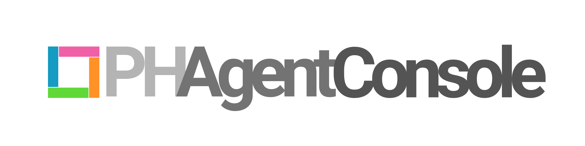

Sign in with your Personalisation Hub account to open the board and the help-centre editor.
Checking sign-in…
🎤 Listening — tap the mic again when you're done.
A short title and best-guess area are generated from what you write — Claude sets the final ones once this ticket is actually looked at.
Optional — groups this under a shared heading on the board.
Visible and editable from both projects' Docs pages — this is the shared, maintained contract between them.
For a fix that's just a live data/config change with no code to push — e.g. a Firestore-only edit — nothing ever needs to reach GitHub. Check this and, once tested, the card can move straight from Ready for Testing to Deployed / Main Branch (Live), skipping Approved for Deployment and Deploy to Main entirely.
🎤 Listening — tap the mic again when you're done.
This ticket is locked while its work is in progress — you can read the thread, but not add to it yet.
Groups this project on the board.
Keep in sync with this project's README.md in the repo.
Keep in sync with this project's REQUIREMENTS.md in the repo.
Any other technical document for this project — a spec, a design doc, etc.
Extra context sent to Claude with every Routine run for this project. Optional.
Flags linked FAQ articles for review when a ticket for this project merges to main.
A shared contract document with another project.
| Type | Area | Ticket | Version | Date | |
|---|---|---|---|---|---|
No archived tickets match these filters.
| Project | Active items | Archived |
|---|
No archived projects.
Anyone listed here can sign in to the PH Agent Console — with Google, or with an email and password — and connect their own AI agent to it. Editor can change the board; viewer can only read it; admin can also manage this list. Turning Agent off leaves someone's browser access untouched but disconnects their agent immediately.
Google accounts work as soon as they're added. For someone without one, use Send sign-in setup on their row — it creates their login and emails them a link to choose a password.
Add the PH Agent Console to Claude (or any MCP client) as a remote MCP server. It will open a sign-in page — use the same account you're signed in with here. Your agent never sees your password, and everything it files or comments is recorded under your email.
https://backlog-tracker-e4ed2.web.app/mcp
In Claude Code: claude mcp add --transport http ph-console https://backlog-tracker-e4ed2.web.app/mcp
A Google Analytics measurement ID (e.g. G-XXXXXXXXXX) or a Google Tag Manager container ID (e.g. GTM-XXXXXXX) — set here once, it gets appended to every customer-facing FAQ page (the front page, category pages, article pages, and search), not just one. Leave blank to track nothing.
Whole projects that have been archived off the board — restore one to bring it back.
Drag any row to re-order it. That order is what visitors see on the help centre.
Nothing here yet.
Comments
🎤 Listening — tap the mic again when you're done.